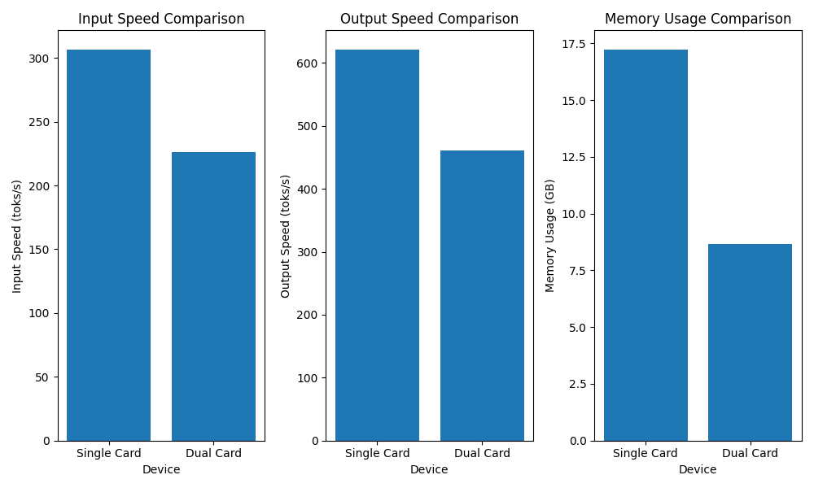

[toc]
Llama-3.1-70b的部署和批量推理（离线推理）
offline inferencem, or batch inference
top_p vs top_k
top_p是指在生成文本时，选择概率最高的p个token作为候选集。例如，如果top_p为0.9，则意味着在生成文本时，选择概率最高的90%的token作为候选集。
top_p的作用是：
- 限制生成的文本的多样性：通过选择概率最高的token，
top_p可以限制生成的文本的多样性，使得生成的文本更加集中和可预测。- 提高生成的文本的质量：通过选择概率最高的token，
top_p可以提高生成的文本的质量，使得生成的文本更加流畅和自然。
top_k是指在生成文本时，选择前k个概率最高的token作为候选集。例如，如果top_k为100，则意味着在生成文本时，选择前100个概率最高的token作为候选集。
top_k的作用是：
- 提高生成的文本的多样性：通过选择前
k个概率最高的token，top_k可以提高生成的文本的多样性，使得生成的文本更加丰富和多样。- 降低生成的文本的质量：通过选择前
k个概率最高的token，top_k可以降低生成的文本的质量，使得生成的文本更加随机和不确定。
top_p和top_k是两个相关但不同的参数。top_p限制了生成的文本的多样性，而top_k提高了生成的文本的多样性。通常情况下，top_p和top_k会被同时使用，以便在生成的文本的质量和多样性之间找到一个平衡。例如，如果你想生成一个高质量的文本，你可以设置
top_p为0.9和top_k为100。这意味着在生成avour时，选择概率最高的90%的token作为候选集，并从候选集中选择前100个概率最高的token作为生成的文本。
Huggingface model
huggingface-cli login
huggingface-cli download -h
huggingface-cli download meta-llama/Llama-3.1-70B-Instruct
Vllm
CUDA和Pytorch
区别了nvcc nvidia-smi torch.__version__
conda和pip
pip 包含build conda一般是可执行
- 安装环境 此处安装的是老版vllm 支持cuda11.8
# conda 虚拟环境
conda create myenv
# 先安装pytorch
conda install pytorch torchvision torchaudio pytorch-cuda=11.8 -c pytorch -c nvidia
# Install vLLM with CUDA 11.8.
export VLLM_VERSION=0.6.1.post1
export PYTHON_VERSION=310
pip install https://github.com/vllm-project/vllm/releases/download/v${VLLM_VERSION}/vllm-${VLLM_VERSION}+cu118-cp${PYTHON_VERSION}-cp${PYTHON_VERSION}-manylinux1_x86_64.whl --extra-index-url https://download.pytorch.org/whl/cu11
- 代码
注意这里的要指定
CUDA_VISIBLE_DEVICES， 而且在代码内支持着一种方式
from vllm import LLM, SamplingParams
import os
os.environ["CUDA_DEVICE_ORDER"] = "PCI_BUS_ID"
os.environ["CUDA_VISIBLE_DEVICES"] = "2"
# Sample prompts.
prompts = [
"Hello, my name is",
"The president of the United States is",
"The capital of France is",
"The future of AI is",
]
# Create a sampling params object.
sampling_params = SamplingParams(temperature=0.8, top_p=0.95)
# Create an LLM.
llm = LLM(model="facebook/opt-125m")
# Generate texts from the prompts. The output is a list of RequestOutput objects
# that contain the prompt, generated text, and other information.
outputs = llm.generate(prompts, sampling_params)
# Print the outputs.
for output in outputs:
prompt = output.prompt
generated_text = output.outputs[0].text
print(f"Prompt: {prompt!r}, Generated text: {generated_text!r}")
问题一 vllm-flash-attn
软硬件
NVIDIA RTX A6000
nvcc: NVIDIA (R) Cuda compiler driver
Copyright (c) 2005-2021 NVIDIA Corporation
Built on Wed_Jun__2_19:15:15_PDT_2021
Cuda compilation tools, release 11.4, V11.4.48
Build cuda_11.4.r11.4/compiler.30033411_0
2.4.0+cu118
11.8
Cannot use FlashAttention-2 backend because the vllm_flash_attn package is not found. pip install vllm-flash-attn for better performance.
这里安装的的不是cuda11.8的，识别不了，我找不到11.8的
vllm-flash-attn，遂放弃。
ValueError: XFormers does not support attention logits soft capping.
重开一个2.4 cuda12.1的虚拟环境,12.1可以装vllm, 但是我本地nvidia-smi是12.0的不清楚会不会出错
没问题，但是又变成2.5.1了，是啥情况 2.5.1+cu124
conda install pytorch==2.4.1 torchvision==0.19.1 torchaudio==2.4.1 pytorch-cuda=12.1 -c pytorch -c nvidia
# 单卡版本
from vllm import LLM, SamplingParams
import os
os.environ["CUDA_DEVICE_ORDER"] = "PCI_BUS_ID"
os.environ["CUDA_VISIBLE_DEVICES"] = "2"
prompts = [
"Hello, my name is",
"The president of the United States is",
"The capital of France is",
"The future of AI is",
]
# Create a sampling params object.
sampling_params = SamplingParams(temperature=0.8, top_p=0.95)
# Create an LLM.
llm = LLM(model="/path/gemma-2-9b-it")
# Generate texts from the prompts. The output is a list of RequestOutput objects
# that contain the prompt, generated text, and other information.
outputs = llm.generate(prompts, sampling_params)
# Print the outputs.
for output in outputs:
prompt = output.prompt
generated_text = output.outputs[0].text
print(f"Prompt: {prompt!r}, Generated text: {generated_text!r}")
# 多卡版本
from vllm import LLM, SamplingParams
import os
os.environ["CUDA_DEVICE_ORDER"] = "PCI_BUS_ID"
os.environ["CUDA_VISIBLE_DEVICES"] = "0,2"
tensor_parallel_size=2
prompts = [
"Hello, my name is",
"The president of the United States is",
"The capital of France is",
"The future of AI is",
]
# Create a sampling params object.
sampling_params = SamplingParams(temperature=0.8, top_p=0.95)
# Create an LLM.
llm = LLM(model="/path/gemma-2-9b-it", tensor_parallel_size=tensor_parallel_size)
# Generate texts from the prompts. The output is a list of RequestOutput objects
# that contain the prompt, generated text, and other information.
outputs = llm.generate(prompts, sampling_params)
# Print the outputs.
for output in outputs:
prompt = output.prompt
generated_text = output.outputs[0].text
print(f"Prompt: {prompt!r}, Generated text: {generated_text!r}")
问题二 GPU资源占用问题
资源占用问题
speed input: 306.32 toks/s, output: 620.85 toks/s]
双卡
加载模型权重时占用了 8.6535 GB 的内存。
内存使用情况：
初始内存使用量：9.10 GiB (第一个进程) 和 23.18 GiB (第二个进程)
峰值 Torch 内存使用量：8.97 GiB (第一个进程) 和 11.02 GiB (第二个进程)
内存使用量（在内存分析后）：9.17 GiB (第一个进程) 和 23.25 GiB (第二个进程)
非 Torch 内存使用量：0.50 GiB (第一个进程) 和 14.58 GiB (第二个进程)
GPU 内存使用量：47.54 GiB
GPU 资源占用：
GPU 内存使用率：0.90
GPU 并发度：26.19x
CUDA 图形资源占用：
CUDA 图形注册数量：2975
CUDA 图形捕获所需时间：38 秒
CUDA 图形捕获所需内存：1.46 GiB
speed input: 226.13 toks/s, output: 461.36 toks/s
单卡
内存占用：
加载模型权重时占用了 17.2179 GB 的内存。
内存使用情况：
初始内存使用量：17.54 GiB
峰值 Torch 内存使用量：19.57 GiB
内存使用量（在内存分析后）：17.55 GiB
非 Torch 内存使用量：0.33 GiB
GPU 内存使用量：47.54 GiB
GPU 资源占用：
GPU 内存使用率：0.90
GPU 并发度：17.43x
CUDA 图形资源占用：
CUDA 图形捕获所需时间：19 秒
CUDA 图形捕获所需内存：1.34 GiB
与之前的输出相比，这个程序的资源占用情况有一些变化：
加载模型权重时占用的内存增加了（从 8.6535 GB 到 17.2179 GB）。
峰值 Torch 内存使用量增加了（从 11.02 GiB 到 19.57 GiB）。
CUDA 图形捕获所需时间减少了（从 38 秒到 19 秒）。
CUDA 图形捕获所需内存减少了（从 1.46 GiB 到 1.34 GiB）。
增加问题数目，双卡
加载模型权重时占用了 8.6535 GB 的内存。
内存使用情况：
初始内存使用量：9.10 GiB (第一个进程) 和 23.18 GiB (第二个进程)
峰值 Torch 内存使用量：8.97 GiB (第一个进程) 和 11.02 GiB (第二个进程)
内存使用量（在内存分析后）：9.17 GiB (第一个进程) 和 23.25 GiB (第二个进程)
非 Torch 内存使用量：0.50 GiB (第一个进程) 和 14.58 GiB (第二个进程)
GPU 内存使用量：47.54 GiB
GPU 资源占用：
GPU 内存使用率：0.90
GPU 并发度：26.19x
CUDA 图形资源占用：
CUDA 图形注册数量：2975
CUDA 图形捕获所需时间：33 秒
CUDA 图形捕获所需内存：1.46 GiB
与之前的输出相比，这个程序的资源占用情况有一些变化：
加载模型权重时占用的内存没有变化（仍然是 8.6535 GB）。
峰值 Torch 内存使用量没有变化（仍然是 8.97 GiB 和 11.02 GiB）。
CUDA 图形捕获所需时间增加了（从 19 秒到 33 秒）。
CUDA 图形捕获所需内存没有变化（仍然是 1.46 GiB）。
增加问题数目，双卡
内存占用：
加载模型权重时占用了 17.2179 GB 的内存。
内存使用情况：
初始内存使用量：17.54 GiB
峰值 Torch 内存使用量：19.57 GiB
内存使用量（在内存分析后）：17.55 GiB
非 Torch 内存使用量：0.33 GiB
GPU 内存使用量：47.54 GiB
GPU 资源占用：
GPU 内存使用率：0.90
GPU 并发度：17.43x
GPU 块数：4463
CPU 块数：780
CUDA 图形资源占用：
CUDA 图形捕获所需时间：21 秒
CUDA 图形捕获所需内存：1.34 GiB
与之前的输出相比，这个程序的资源占用情况有一些变化：
加载模型权重时占用的内存增加了（从 8.6535 GB 到 17.2179 GB）。
峰值 Torch 内存使用量增加了（从 11.02 GiB 到 19.57 GiB）。
CUDA 图形捕获所需时间减少了（从 33 秒到 21 秒）。
CUDA 图形捕获所需内存减少了（从 1.46 GiB 到 1.34 GiB）。

Llama factory
webui board